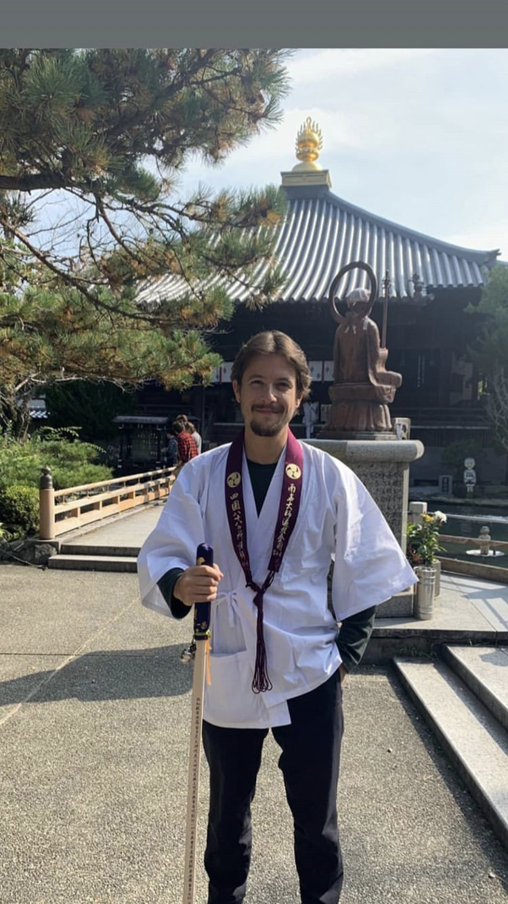
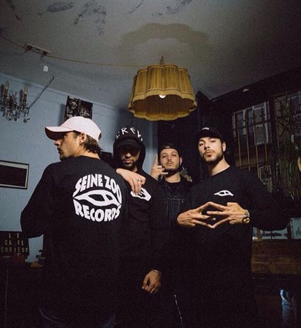

.jpg)
Collaboration
2009 DJ Lo featuring 2-Zer, Alpha Wann, Eff Gee, Loveni, Nekfeu, Ouhhz et Poochkeen - Les 7 fantastiques DJ Lo featuring Sneazzy et Nekfeu - Beat Bounce Lyricalchimie featuring Alpha Wann et Nekfeu - Le carré des Bermudes. - 2010 2-Zer featuring Nekfeu et Ouhhz - L'effet pas d'pilon. Alpha Wann featuring Nekfeu - À force de vivre mal. Eff Gee et Melo Mendes featuring Nekfeu et Poochkeen - On débarque. 2011 Guizmo featuring Nekfeu et Alpha Wann - Sales babtous d'négros. Guizmo featuring Deen Burbigo, 2-Zer et Nekfeu - L'Entourage. Lomepal featuring Nekfeu - À la trappe (pas d'album). Nekfeu featuring Alpha Wann - Dans ta réssoi (pas d'album). Nekfeu featuring Krimsa - La main sur le mic (pas d'album). Nekfeu - Suga (pas d'album)
2012 Guizmo featuring Nekfeu - Baptême de l'air (pas d'album). Guizmo featuring Nekfeu - Enfant de la patrie (pas d'album). Guizmo featuring Nekfeu - Ma maman m'a dit (pas d'album). Nekfeu - Marche arrière, sur la mixtape du Gouffre Marche arrière. Nekfeu - Joint de culotte (pas d'album). Sneazzy featuring Alpha Wann et Nekfeu - The motto remix (pas d'album). 2013 Dinos Punchlinovic featuring Nekfeu - Bouchées triples, sur l'EP de Dinos. Nekfeu - 30 septembre (pas d'album). Nekfeu - U.B. (pas d'album). Sneazzy featuring Nekfeu - Voilà (pas d'album). Spri Noir, Sadek, Nessbeal, Sneazzy Still Fresh, Disiz, Nekfeu, Taïro, Dry, Kool Shen, Soprano, Lino et Akhenaton - La marche, sur la bande originale du film La marche. 2014 Nekfeu featuring Alpha Wann - Flingue et feu (pas d'album) Sneazzy featuring Nekfeu - No type (remix) (pas d'album)
2018 Jazzy Bazz featuring Nekfeu-Éternité, sur l'album de Jazzy Bazz Nuit PLK featuring Nekfeu - Waow, sur l'album de PLK POLAK 2019 Dadju featuring Nekfeu - Paire d'as sur l'album de Dadju - Poison ou Antidote Doums featuring Nekfeu - Ce soir sur l'EP de Doums - Pilote & Co 2020 Népal featuring Nekfeu - En façe sur l'album de Népal - Adios Bahamas Sneazzy featuring Nekfeu - ZÉRO DÉTAIL sur l'album de Sneazzy-NOUVO MODE Kalash Criminel featuring Nekfeu-Turn Up sur l'album de Kalash Criminel - Sélection naturelle.
.jpg)
2015 Gradur featuring Nekfeu - Donne-moi ta main, sur la mixtape de Gradur Sheguey Vara Vol.2 Sneazzy featuring Nekfeu - On s'en tape, sur l'album de Sneazzy Super S.Pri Noir featuring Nekfeu - CFA, sur l'EP de S.Pri Noir Le monde ne suffit pas 2016 Alpha Wann featuring Nekfeu - À deux pas, sur l'EP d'Alpha Wann Alph Lauren 2 Nekfeu - L'homme qui ne valait pas dix centimes, sur la compilation Affaire de famille (à venir) Rim'K featuring Nekfeu - Paris la nuit, sur la mixtape de Rim'K Monster Tape 2017 Ninho featuring Nekfeu - De l'autre coté, sur l'album de Ninho Comme Prévu Orelsan featuring Nekfeu, Dizzee Rascal - Zone, sur l'album de Orelsan La fête est finie